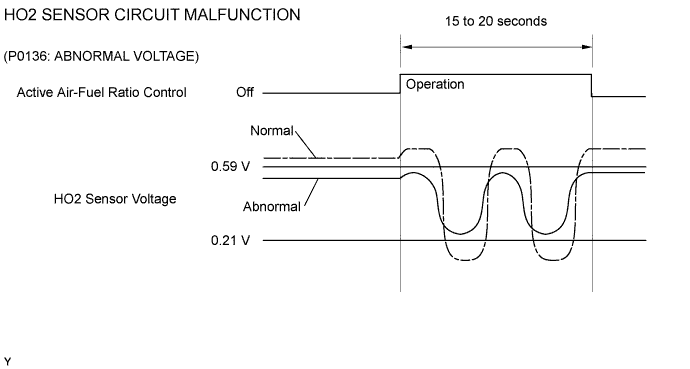
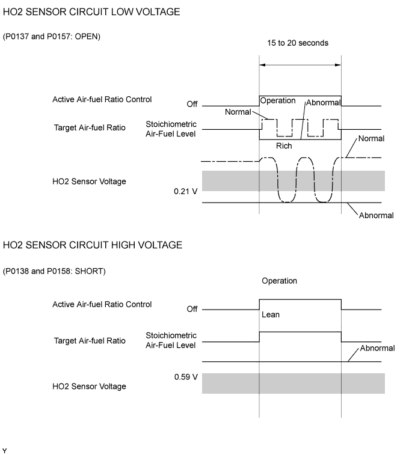
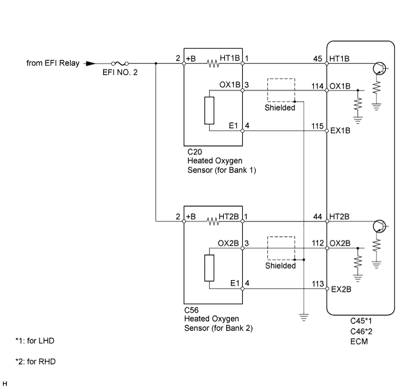
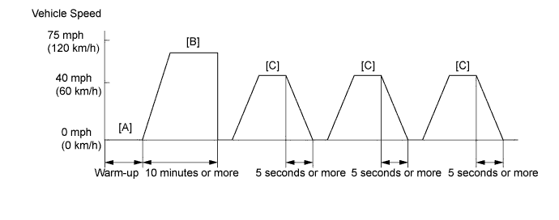
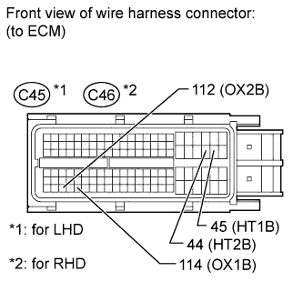
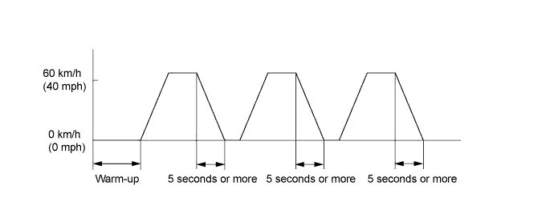
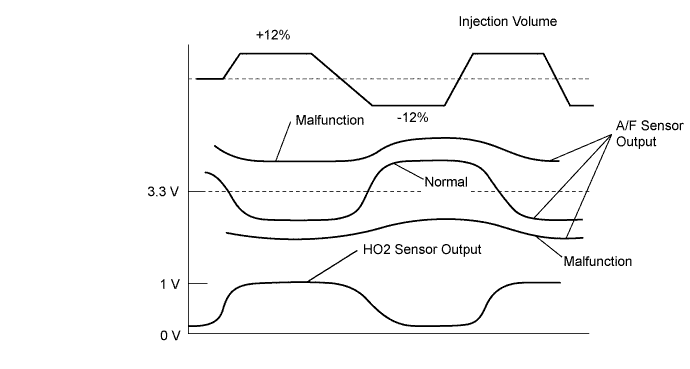
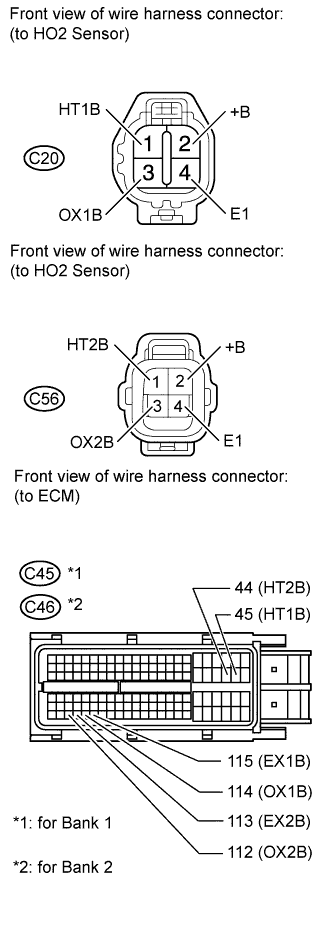
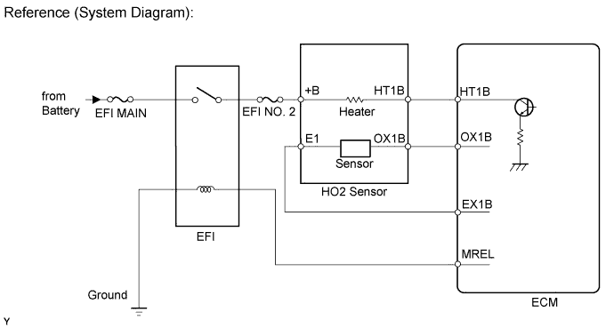
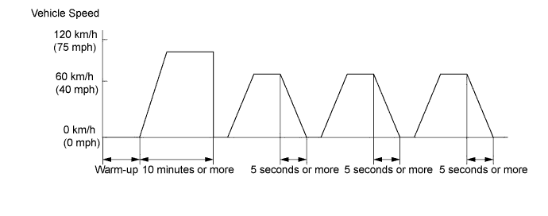

DTC P0136 Oxygen Sensor Circuit Malfunction (Bank 1 Sensor 2) |
DTC P0137 Oxygen Sensor Circuit Low Voltage (Bank 1 Sensor 2) |
DTC P0138 Oxygen Sensor Circuit High Voltage (Bank 1 Sensor 2) |
DTC P0156 Oxygen Sensor Circuit Malfunction (Bank 2 Sensor 2) |
DTC P0157 Oxygen Sensor Circuit Low Voltage (Bank 2 Sensor 2) |
DTC P0158 Oxygen Sensor Circuit High Voltage (Bank 2 Sensor 2) |

| DTC Code | DTC Detection Condition | Trouble Area |
| P0136 P0156 |
|
|
| P0137 P0157 |
|
|
| P0138 P0158 |
|
|




| Tester Display (Sensor) | Injection Volume | Status | Voltage |
| AFS B1 S1 or AFS B2 S1 (A/F) | +25% | Rich | Below 3.0 V |
| AFS B1 S1 or AFS B2 S1 (A/F) | -12.5% | Lean | Higher than 3.35 V |
| O2S B1 S2 or O2S B2 S2 (HO2) | +25% | Rich | Higher than 0.55 V |
| O2S B1 S2 or O2S B2 S2 (HO2) | -12.5% | Lean | Below 0.4 V |
| Case | A/F Sensor (Sensor 1) Output Voltage | HO2 Sensor (Sensor 2) Output Voltage | Main Suspected Trouble Area |
| 1 |   |  | - |
| 2 |  | |
|
| 3 | | |
|
| 4 | | |
|
| 1.READ OUTPUT DTC |
Connect the intelligent tester to the DLC3.
Turn the engine switch on (IG) and turn the tester on.
Enter the following menus: Powertrain / Engine and ECT / DTC.
Read DTCs.
| Result | Proceed to |
| P0138 or P0158 is output | A |
| P0137 or P0157 is output | B |
| P0136 or P0156 is output | C |
|
| ||||
|
| ||||
| A | |
| 2.READ VALUE USING INTELLIGENT TESTER (OUTPUT VOLTAGE OF HEATED OXYGEN SENSOR) |
Connect the intelligent tester to the DLC3.
Turn the engine switch on (IG) and turn the tester on.
Enter the following menus: Powertrain / Engine and ECT / Data List / A/F Control System / O2S B1 S2 or O2S B2 S2.
Allow the engine to idle.
Read the Heated Oxygen (HO2) sensor output voltage while idling.
| Result | Proceed to |
| Higher than 1.2 V | A |
| Below 1.0 V | B |
|
| ||||
|
| ||||
| 3.INSPECT HEATED OXYGEN SENSOR (CHECK FOR SHORT) |
 |
Disconnect the Heated Oxygen (HO2) sensor connector.
Measure the resistance according to the value(s) in the table below.
| Tester Connection | Condition | Specified Condition |
| 2 (+B) - 3 (OX1B) | Always | 10 kΩ or higher |
| 2 (+B) - 4 (E1) | Always | 10 kΩ or higher |
| 2 (+B) - 3 (OX2B) | Always | 10 kΩ or higher |
| 2 (+B) - 4 (E1) | Always | 10 kΩ or higher |
|
| ||||
| OK | |
| 4.CHECK HARNESS AND CONNECTOR (CHECK FOR SHORT) |
 |
Turn the engine switch off and wait for 5 minutes.
Disconnect the ECM connector.
Measure the resistance according to the value(s) in the table below.
| Tester Connection | Condition | Specified Condition |
| C45-45 (HT1B) - C45-114 (OX1B) | Always | 10 kΩ or higher |
| C45-44 (HT2B) - C45-112 (OX2B) | Always | 10 kΩ or higher |
| Tester Connection | Condition | Specified Condition |
| C46-45 (HT1B) - C46-114 (OX1B) | Always | 10 kΩ or higher |
| C46-44 (HT2B) - C46-112 (OX2B) | Always | 10 kΩ or higher |
|
| ||||
| OK | ||
| ||
| 5.CHECK AIR FUEL RATIO SENSOR CURRENT |
Connect the intelligent tester to the DLC3.
Start the engine and turn the tester on.
Enter the following menus: Powertrain / Engine and ECT / Data List / A/F Control System / AFS B1 S1 or AFS B2 S1.
Warm up the engine until the engine coolant temperature is 75°C (167°F) or higher.
Drive the vehicle at 60 km/h (40 mph) or more and decelerate the vehicle for 5 seconds or more.
Perform this 3 times.
Read the value.

|
| ||||
|
| ||||
| 6.READ VALUE USING INTELLIGENT TESTER (OUTPUT VOLTAGE OF HEATED OXYGEN SENSOR) |
Connect the intelligent tester to the DLC3.
Turn the engine switch on (IG) and turn the tester on.
Start the engine.
Enter the following menus: Powertrain / Engine and ECT / Data List / A/F Control System / O2S B1 S2 or O2S B2 S2.
After warming up the engine, run the engine at an engine speed of 2500 rpm for 3 minutes.
Read the output voltage of the HO2 sensor when the engine speed is suddenly increased.
|
| ||||
| OK | |
| 7.PERFORM ACTIVE TEST USING INTELLIGENT TESTER (INJECTION VOLUME) |

Connect the intelligent tester to the DLC3.
Start the engine and turn the tester on.
Warm up the engine.
Enter the following menus: Powertrain / Engine and ECT / Active Test / Control the Injection Volume.
Change the fuel injection volume using the tester, and monitor the voltage output of Air-Fuel Ratio (A/F) and HO2 sensors displayed on the tester.
| Tester Display (Sensor) | Voltage Variation | Proceed to |
| AFS B1 S1 (A/F) AFS B2 S1 (A/F) | Alternates between higher than and below 3.3 V | OK |
| Remains at higher than 3.3 V | NG | |
| Remains at below 3.3 V | NG |
|
| ||||
| OK | ||
| ||
| 8.CHECK FOR EXHAUST GAS LEAK |
Check for exhaust gas leakage from the exhaust manifold and pipe.
|
| ||||
| OK | |
| 9.INSPECT HEATED OXYGEN SENSOR (HEATER RESISTANCE) |
|
Disconnect the Heated Oxygen (HO2) sensor connector.
Measure the resistance according to the value(s) in the table below.
| Tester Connection | Condition | Specified Condition |
| 1 (HT1B) - 2 (+B) | 20°C (68°F) | 11 to 16 Ω |
| 1 (HT1B) - 4 (E1) | Always | 10 kΩ or higher |
| 1 (HT2B) - 2 (+B) | 20°C (68°F) | 11 to 16 Ω |
| 1 (HT2B) - 4 (E1) | Always | 10 kΩ or higher |
|
| ||||
| OK | |
| 10.INSPECT INTEGRATION RELAY (EFI RELAY) |
 |
Remove the integration relay from the engine room relay block.
Inspect the EFI MAIN fuse.
Remove the EFI MAIN fuse from the integration relay.
Measure the resistance according to the value(s) in the table below.
| Tester Connection | Condition | Specified Condition |
| EFI MAIN fuse | Always | Below 1 Ω |
Reinstall the EFI MAIN fuse.
Inspect the EFI relay.
Measure the resistance according to the value(s) in the table below.
| Tester Connection | Condition | Specified Condition |
| 1C-1 - 1B-4 | When no battery voltage applied to terminals 1B-2 and 1B-3 | 10 kΩ or higher |
| When battery voltage applied to terminals 1B-2 and 1B-3 | Below 1 Ω |
|
| ||||
| OK | |
| 11.CHECK HARNESS AND CONNECTOR (HEATED OXYGEN SENSOR - ECM) |
  |
Disconnect the HO2 sensor connector.
Measure the voltage according to the value(s) in the table below.
| Tester Connection | Switch Condition | Specified Condition |
| C20-2 (+B) - Body ground | Engine switch on (IG) | 9 to 14 V |
| C56-2 (+B) - Body ground | Engine switch on (IG) | 9 to 14 V |
Turn the engine switch off.
Disconnect the ECM connector.
Measure the resistance according to the value(s) in the table below.
| Tester Connection | Condition | Specified Condition |
| C20-1 (HT1B) - C45-45 (HT1B) | Always | Below 1 Ω |
| C20-3 (OX1B) - C45-114 (OX1B) | Always | Below 1 Ω |
| C20-4 (E1) - C45-115 (EX1B) | Always | Below 1 Ω |
| C56-1 (HT2B) - C45-44 (HT2B) | Always | Below 1 Ω |
| C56-3 (OX2B) - C45-112 (OX2B) | Always | Below 1 Ω |
| C56-4 (E1) - C45-113 (EX2B) | Always | Below 1 Ω |
| C20-1 (HT1B) or C45-45 (HT1B) - Body ground | Always | 10 kΩ or higher |
| C20-3 (OX1B) or C45-114 (OX1B) - Body ground | Always | 10 kΩ or higher |
| C56-1 (HT2B) or C45-44 (HT2B) - Body ground | Always | 10 kΩ or higher |
| C56-3 (OX2B) or C45-112 (OX2B) - Body ground | Always | 10 kΩ or higher |
| Tester Connection | Condition | Specified Condition |
| C20-1 (HT1B) - C46-45 (HT1B) | Always | Below 1 Ω |
| C20-3 (OX1B) - C46-114 (OX1B) | Always | Below 1 Ω |
| C20-4 (E1) - C46-115 (EX1B) | Always | Below 1 Ω |
| C56-1 (HT2B) - C46-44 (HT2B) | Always | Below 1 Ω |
| C56-3 (OX2B) - C46-112 (OX2B) | Always | Below 1 Ω |
| C56-4 (E1) - C46-113 (EX2B) | Always | Below 1 Ω |
| C20-1 (HT1B) or C46-45 (HT1B) - Body ground | Always | 10 kΩ or higher |
| C20-3 (OX1B) or C46-114 (OX1B) - Body ground | Always | 10 kΩ or higher |
| C56-1 (HT2B) or C46-44 (HT2B) - Body ground | Always | 10 kΩ or higher |
| C56-3 (OX2B) or C46-112 (OX2B) - Body ground | Always | 10 kΩ or higher |
|
| ||||
| OK | ||
| ||
| 12.REPLACE HEATED OXYGEN SENSOR |
Replace the heated oxygen sensor (Click here).
| NEXT | |
| 13.PERFORM CONFIRMATION DRIVING PATTERN |
Connect the intelligent tester to the DLC3.
Turn the engine switch on (IG).
Warm up the engine until the engine coolant temperature is 75°C (167°F) or higher.
Drive the vehicle at 60 to 120 km/h (40 to 75 mph) for 10 minutes.
Drive the vehicle at 60 km/h (40 mph) or more and decelerate the vehicle for 5 seconds or more. Perform this 3 times.
Turn the tester on.
Enter the following menus: Powertrain / Engine and ECT / Utility / All Readiness.
Input DTCs: P0136, P0137, P0138, P0156, P0157 and P0158.
Check that DTC monitor is NORMAL. If DTC monitor is INCOMPLETE, perform the drive pattern increasing the vehicle speed and using second gear to decelerate the vehicle.

|
| ||||
| OK | ||
| ||
| 14.REPLACE AIR FUEL RATIO SENSOR |
Replace the air fuel ratio sensor (Click here).
| NEXT | |
| 15.PERFORM CONFIRMATION DRIVING PATTERN |
Connect the intelligent tester to the DLC3.
Turn the engine switch on (IG).
Clear the DTCs.
Switch the ECM from normal mode to check mode using the tester.
Warm up the engine until the engine coolant temperature is 75°C (167°F) or higher.
Drive the vehicle at 60 to 120 km/h (40 to 75 mph) for 10 minutes.
Drive the vehicle at 60 km/h (40 mph) or more and decelerate the vehicle for 5 seconds or more. Perform this 3 times.
Turn the tester on.
Enter the following menus: Powertrain / Engine and ECT / Utility / All Readiness.
Input DTCs: P0136, P0137, P0138, P0156, P0157 and P0158.
Check that DTC monitor is NORMAL. If DTC monitor is INCOMPLETE, perform the drive pattern increasing the vehicle speed and using second gear to decelerate the vehicle.
|
| ||||
| OK | ||
| ||